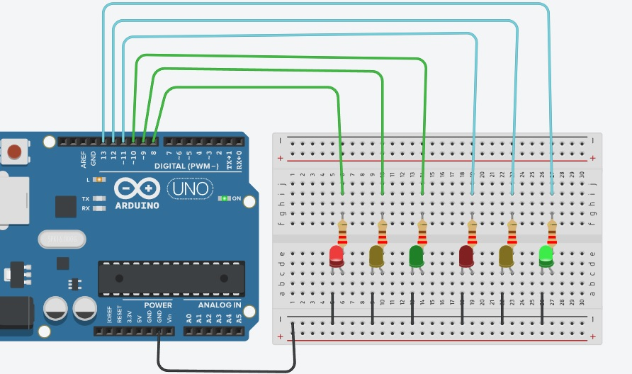
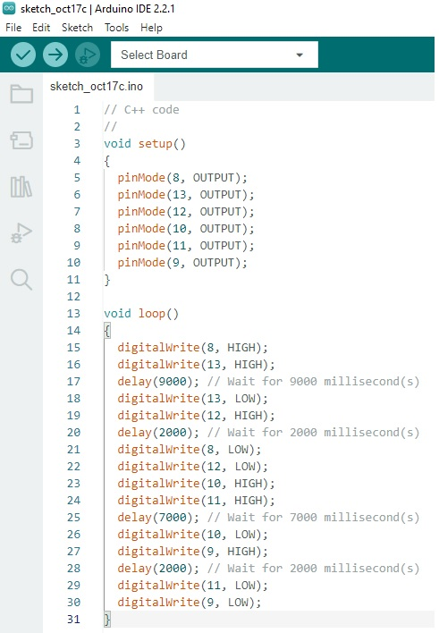

Arduino e tinkercad
Semaforo simples Tinkercad
Semaforo simples Arduíno
Semaforo duplo Tinkercad
semaforo duplo Arduino
Contador crescente de 0 à 9
Contador crescente de 9 à 0
Contador decrescente de 9 à 0 com SEMÁFORO DUPLO
Atividade no tinkercad

Fonte: tinkercad
